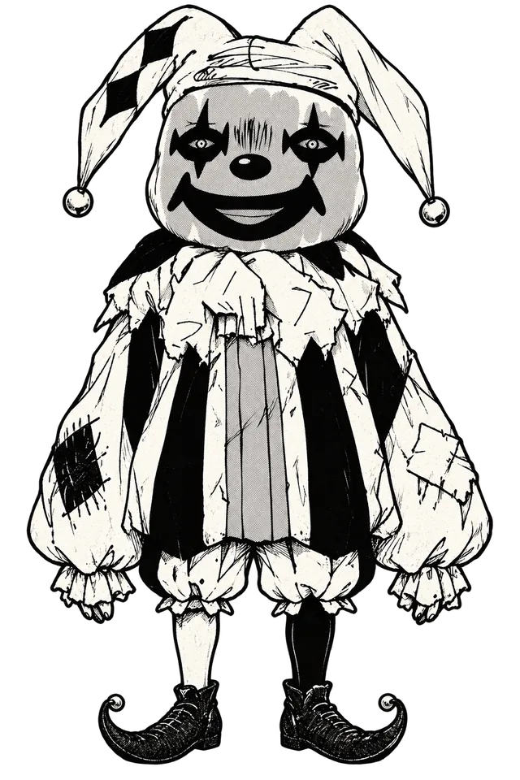
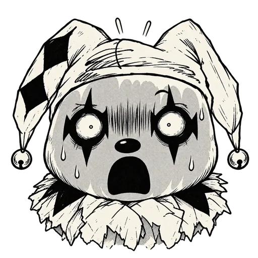
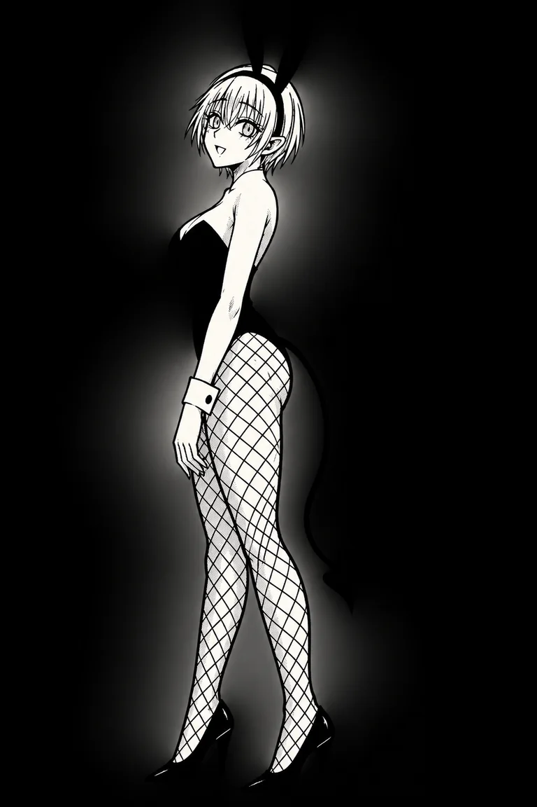

イカサマダイス
10個から3個を選んでロール。直前に相手が使った3個は選択不可。未獲得かつブロックされていない目が揃えば1PT。
0PLAYER
VS
0CPU
あなたのターン
ROUND 1獲得済みの目（両者共通・再得点不可）: なし
CPUのブロック目（このぞろ目は無効）: - 不成立 0/6 ジャッジの疑い 0%



DEMO
CPUが投げる前に、ブロックする目を選んで確定
観察メモ
このゲームで見えた出目の記録（新しい順・最大12回）。傷の位置と模様で個体を見分けられます。
ダイスをクリック、または 1〜9・0（10番）キーで選択。R/Enter でロール。ブロック目は 1〜6 → Enter。Esc ですり替えを中止。詳しくは「？ ルール」へ。